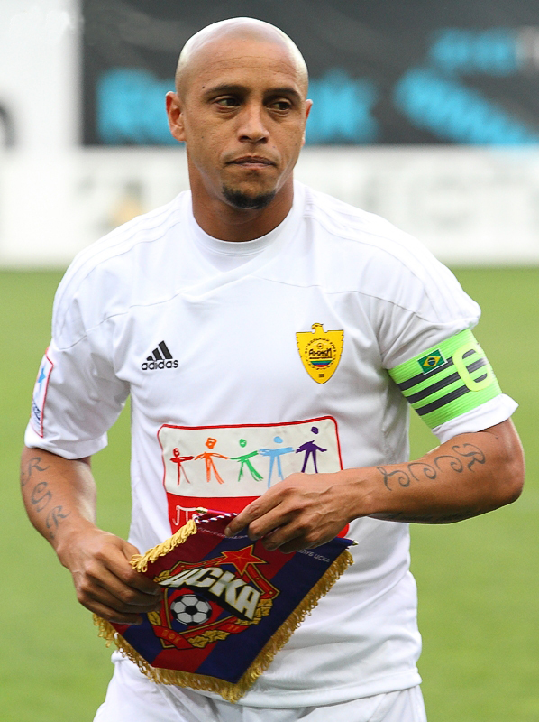
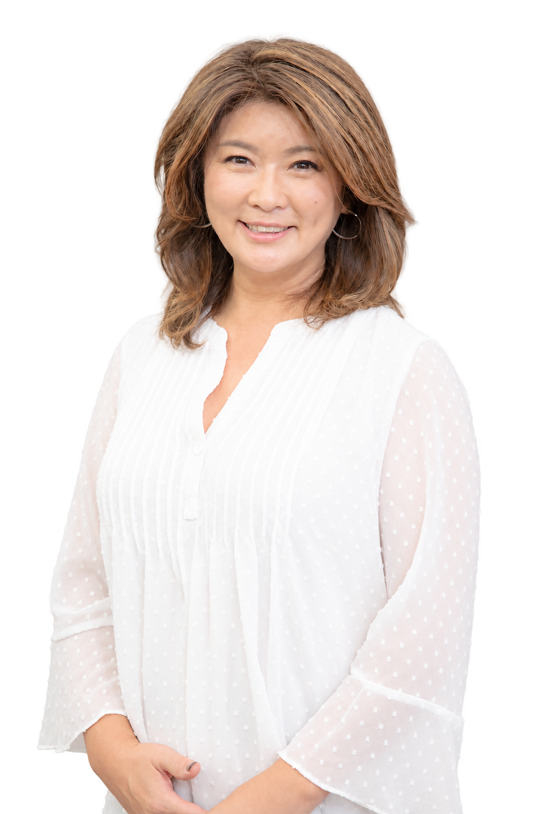
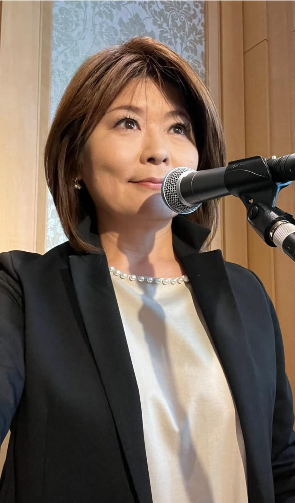
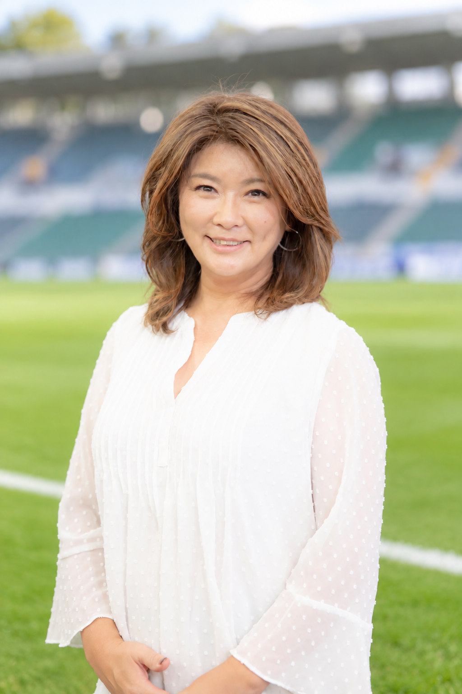

写真：Майоров Владимир / Wikimedia Commons · CC BY-SA 3.0（表示枠でトリミング）
INTERVIEW / 聞き手
ロベルト・カルロス
単独インタビュー
- 日韓ワールドカップ インタビュアー
- 青山学院大学・原晋監督 インタビューMC
選手や監督の言葉を聞いて届ける仕事から、イベントでのインタビュー進行まで。
企画の聞き手を相談する ↗VOICE, DIALOGUE & EXPERIENCE
MC・ナレーション・インタビュー。制作やイベントの目的に合わせて、聞き手・進行・声の表現をご相談いただけます。
企画が固まる前でも、ご相談いただけます。

EXPERIENCE THAT SPEAKS
ロベルト・カルロスへの単独インタビュー。日韓ワールドカップでのインタビュアー。プロゴルフトーナメントでのアナウンスやMC。
聞く・進める・声で届ける仕事を、さまざまな現場で重ねてきました。企画の目的に合わせて、中願寺香織がお手伝いします。

INTERVIEW / 聞き手
選手や監督の言葉を聞いて届ける仕事から、イベントでのインタビュー進行まで。
企画の聞き手を相談する ↗GOLF / アナウンス・MC
大会実績：伊藤園レディース／エリエールレディース／TOTOジャパン／マスターズGC／ミズノオープン ほか
担当領域：トーナメントのスタートアナウンス、プロアマ大会前夜祭・表彰式MC、選手トークショーMC。
大会・イベントのMCを相談する ↗SPORTS / 中継・イベント
スポーツの現場で培った経験を、リポートや会場の進行に。
現場の進行・リポートを相談する ↗
VOICE & PRESENCE
実績名と合わせて、声や話し方、現場での進行をご覧いただけるよう、映像・音声を掲載する場所を用意しています。
以下は素材準備中の枠です。動画とコメントはまだ掲載されていません。
掲載可能な映像を選び、取材相手・担当内容を添えて紹介します。
進行や会場でのやり取りが分かる映像を掲載します。
映像や番組に合う声かどうか、ご判断いただくためのサンプルです。
CLIENT VOICES
企画が固まる前でも、目的・希望時期・実施場所からお聞かせください。
聞き手・MC・声の仕事について、担当範囲を伺って個別にお見積もりします。
WORK & EXPERIENCE
制作会社・イベント会社の方へ。企画に必要な聞き手、司会、ナレーションをご相談ください。コーチングと講演についても、目的を伺って内容をご相談します。
イベントの進行、トークショーの聞き手、映像や番組の声の表現
個人・チームの力を本番で発揮できる力へ
これまでの現場経験をもとに、テーマと対象をご相談
KIDS・Thank you Celebration・研修プログラムは準備中です。子どもたちが自分で考え、行動し、自分の人生を選ぶ力を育てることも、大切にしたい活動です。
活動の考えをご紹介しています。開催日・参加条件・募集開始は未定です。
FOR YOUR NEXT PROJECT
映像やトークショーに、話し手の想いを引き出すインタビュアーを。
人が集まる場に、目的に合わせた司会と進行を。
VOICE & WORDS
MC・ナレーション・インタビュー
声と言葉の仕事をご相談いただけます
INTERVIEW
経営者や社員の紹介、会社や事業の紹介、スポーツ選手への取材。伝えたい相手と用途を伺いながら、インタビューの内容をご相談いただけます。
依頼例です。撮影・編集・動画納品の範囲は、内容に合わせて確認します。
経営者・監督・選手・リーダーなどへのインタビュー。目的に合わせた事前設計・質問作成から、当日の聞き手・進行までご相談いただけます。
ご希望の用途・取材人数・実施形式・時期を伺い、担当範囲と進め方をご提案します。
料金は、ご依頼内容に応じて個別にお見積もりします。ご相談の中心は、聞き手・当日の進行です。企画・撮影・編集・動画納品を組み合わせる商品は、現在内容を検討しています。
MC & ANNOUNCE
どんな場で、誰に、何を届けたいか。開催の目的や当日の役割から、司会・MCのお仕事についてお聞かせください。
イベントの種類・準備・当日の担当範囲は、個別に確認します。
司会・MCを相談する ↗仕事内容を見る ↗
THE PERSON BEHIND THE VOICE
プロスポーツ選手などへの
インタビュー経験を活かして
相手の話を聞き、想いを引き出し、声と言葉で届ける。アナウンスの仕事で大切にしている姿勢を、対話や学びの場にもつなげていきます。
プロフィールを見る ↗LET’S START WITH YOUR IDEA
内容を伺ってお見積もり
全国への出張・オンラインに対応
何を届けたいか、いつごろを考えているか。企画が固まる前でも、分かることからメールでご相談いただけます。
形式・時間・回数・納品物・追加費用など、必要な条件を確認する構成です。各サービスの具体的な条件は本人確認後に掲載します。
相談から正式な依頼となる手続き、相談・見積もりの費用、返信の目安は、今日のヒアリングで確認予定です。
ご相談の流れは確認用の案です。受付条件・交通費・納期などは本人確認待ちです。
相談前に確認することを見る ↗RESERVATION / RESERVA STOCK
リザーブストック設置予定
ご相談・予約の入口として、リザーブストックを設置する予定です。相談したい内容を選び、空き日から日時を選べる導線を整えます。
中願寺さんの本人用URLと受付メニューを確認してから接続します。
現在はメールでご相談いただけます。この草案から予約はできません。
MAKE YOUR NEXT WONDER
目的・希望時期・相談したい仕事をお知らせください。
Instagramからお越しの方も、こちらからご相談いただけます。
メールでのご相談です 料金・受付条件は確認中
COACHING
コーチングの内容と相談方法
アスリート・経営者・リーダーの目標達成を、対話でサポートします。対面・オンラインに対応し、基本は継続、単発のご相談も可能です。
目標や課題に合わせた内容・回数・期間をご相談ください。料金は個別にお見積もりします。
コーチングを相談する ↗
ABOUT KAORI
コーチングに関わる経験や考え、掲載できる資料は、ご本人への確認後にご紹介します。
未確認の資格・実績・参加者の感想は掲載していません。
プロフィールを見る ↗NEXT STEP
目標や課題に合わせた内容・回数・期間をご相談ください。料金は個別にお見積もりします。
悩みや目標、個人かチームか、希望する時期をお知らせください。
対象・形式・時間・回数・費用・継続条件を確認する流れです。具体的な受付手順は本人確認待ちです。
正式な申込みの手続き、変更・キャンセル、支払い条件は確認後に掲載します。
確認用の構成案です。具体的な提供条件は本人確認後に反映します。
KIDS / PROGRAM CONCEPT
インタビューを通じて、これから社会で生きていくために大切な経験を重ねるプログラムを目指しています。現在は構想段階です。
内容と条件を見る ↗KIDS / PROGRAM CONCEPT
KIDSの内容と相談方法
観察して、質問を考え、人に話を聞き、内容を整理し、自分の言葉で伝える。インタビューを通じて、人と関わりながら学ぶ体験の構想です。
構想中です。募集・対象年齢・日時・会場・料金は未確定です。
KIDSの確認事項を見る ↗ABOUT KAORI
KIDSに関わる経験や考え、掲載できる資料は、ご本人への確認後にご紹介します。
未確認の資格・実績・参加者の感想は掲載していません。
プロフィールを見る ↗NEXT STEP
構想中です。募集・対象年齢・日時・会場・料金は未確定です。
対象年齢やプログラムの内容、実施方法は本人への確認後に整理します。
日時・場所・定員・参加費・申込み方法が決まってからご案内します。
現在は募集していません。受付開始と申込み先は未定です。
確認用の構成案です。具体的な提供条件は本人確認後に反映します。
THANK YOU CELEBRATION / IN PREPARATION
大切な人に感謝を伝える会を、どのようにお手伝いするか。Thank you Celebrationは、生前葬をテーマにした活動です。詳しい内容は準備中です。
内容と条件を見る ↗THANK YOU CELEBRATION / IN PREPARATION
Thank you Celebrationの内容と相談方法
どんな人に、何を伝えたいか。感謝を伝える場について、ご本人の考えとお手伝いできる範囲を確認しながら、内容を整えていきます。開催や受付の条件は未確定です。
準備中です。支援範囲・開催・料金・受付は未確定です。
Thank you Celebrationの準備状況を見る ↗
ABOUT KAORI
Thank you Celebrationに関わる経験や考え、掲載できる資料は、ご本人への確認後にご紹介します。
未確認の資格・実績・参加者の感想は掲載していません。
プロフィールを見る ↗NEXT STEP
準備中です。支援範囲・開催・料金・受付は未確定です。
生前葬をテーマにした活動の背景と、支援する範囲を確認してご紹介します。
形式・時間・人数・準備・費用を整理し、受付できる内容を確認します。
現在は準備中です。正式な受付開始や申込み方法は未定です。
確認用の構成案です。具体的な提供条件は本人確認後に反映します。
THANK YOU CELEBRATION / IN PREPARATION
準備中です。支援範囲・開催・料金・受付は未確定です。
Thank you Celebrationの準備状況を見る ↗TALKS & TRAINING
講演は、テーマや対象を伺って内容をご相談します。研修プログラムは準備中です。具体的なテーマや事例は本人確認待ちです。
内容と条件を見る ↗TALKS & TRAINING
講演・研修の内容と相談方法
誰に、どんなことを学んでほしいか。講演の目的と希望するテーマをお聞かせください。研修プログラムは現在内容を準備しています。
講演のテーマ・対象・条件はご相談ください。研修プログラムは準備中です。
講演を相談する ↗ABOUT KAORI
講演・研修に関わる経験や考え、掲載できる資料は、ご本人への確認後にご紹介します。
未確認の資格・実績・参加者の感想は掲載していません。
プロフィールを見る ↗NEXT STEP
講演のテーマ・対象・条件はご相談ください。研修プログラムは準備中です。
希望テーマ・対象者・人数・開催時期・会場など、分かる範囲でご相談ください。
構成・時間・回数・教材・費用など、実施に必要な条件を確認する流れです。
正式な依頼手順、支払い、変更・キャンセル条件は本人確認後に掲載します。
確認用の構成案です。具体的な提供条件は本人確認後に反映します。
お客様のコメント掲載予定
インタビューをご依頼の方
ご依頼の背景・担当した内容・実際にいただいたご感想を紹介する枠です。
原文と、お名前・所属の掲載範囲を確認後に掲載します。
お客様のコメント掲載予定
MC・進行をご依頼の方
イベントの目的・担当した内容・実際にいただいたご感想を紹介する枠です。
原文と、お名前・所属の掲載範囲を確認後に掲載します。